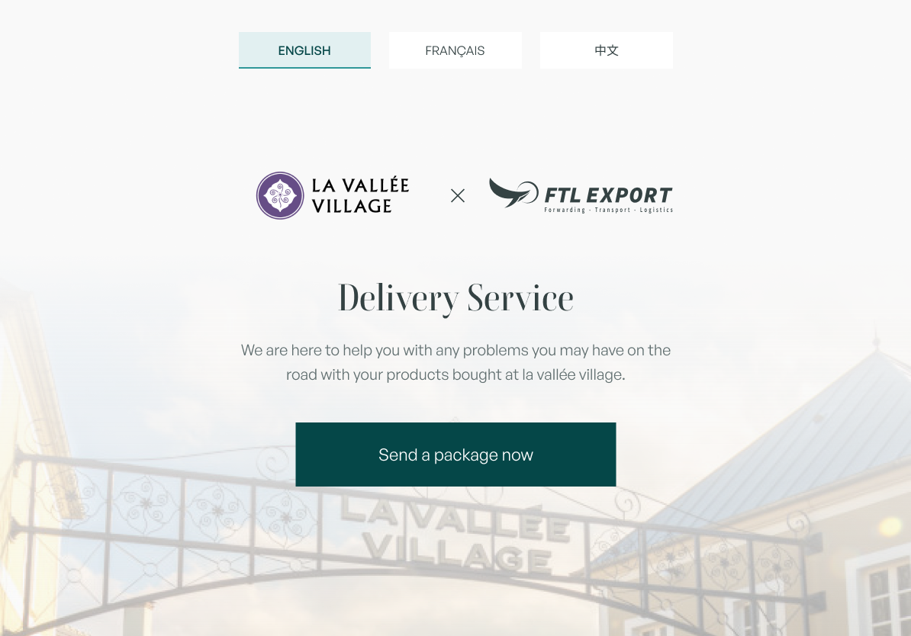
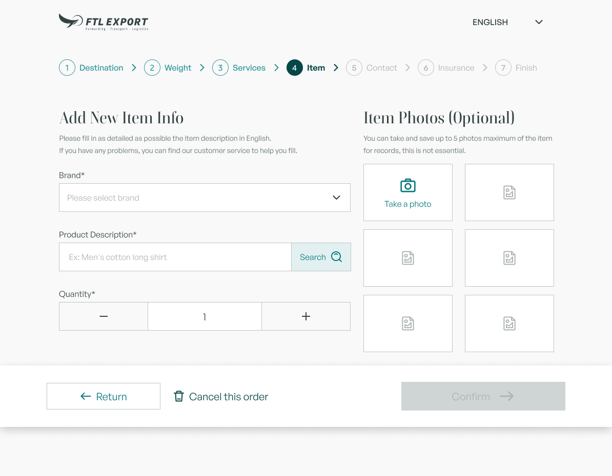

FTL × La Vallée Village · Product design
Staff-assisted shipping at La Vallée Village
A multilingual iPad prototype that turns cross-border parcel rules into a guided in-store experience shared by staff and customers.

Original high-fidelity prototype · shown as delivered, not retrospectively polished
01
Context
A service problem, not a screen redesign
A luxury purchase leaves the store. The logistics complexity begins.
FTL planned a parcel service near the LVV exit for international visitors sending purchases to hotels or overseas addresses. The existing desktop tool was built around operations. The new iPad had to support a premium, face-to-face service without asking customers or staff to understand every cross-border rule in advance.
North starLet staff and customers complete a complex international order together, without either person knowing every logistics rule beforehand.
02
Frame
The product equation
Two actors. One shared device. Uneven knowledge.
Destination, items and private information.
Customers need clarity and control when entering addresses, contact details and parcel contents.
Service rules, exceptions and what happens next.
Staff guide the service, explain trade-offs and continue payment and operations outside the product.
When to narrow, compare, validate and hand off.
The system carries rule complexity so neither actor has to hold the entire process in memory.
03
Map
Information architecture
Start with the variable that changes everything else.
Destination determines carrier availability, delivery time, price, insurance and required fields. Asking it first prevents customers from entering details that may later become irrelevant.
- 01DestinationRules begin here
- 02Weight
- 03Services
- 04Item
- 05Contact
- 06Insurance
- 07Finish
04
Decide
Three decisions that shaped the product
The work was not the number of screens. It was deciding what the system should carry.
Progressive disclosure over one exhaustive form.
Seven focused steps reduce visible complexity while persistent progress, return and cancel controls support recovery.
Shared control over forced self-service.
Staff guide logistics decisions; customers can enter sensitive information directly. The device becomes a collaboration surface.
Comparable trade-offs over a list of carriers.
Service, speed and starting price use a consistent structure, with “Lowest price” and “Fastest” labels supporting choice.
05
Prototype
Explore the original flow
Five moments where product logic becomes visible.
Use the controls to move through selected states from the delivered Figma prototype.
01 / 05
Set language and frame the assisted service before the order begins.
06
Validate
Evidence, with its limits visible
What we checked, and what we did not.
- Stakeholder discovery and requirements
- On-site observation of the LVV circulation and planned store location
- Iterative team reviews of flow, wireframes and prototype
- Internal flow testing and front-end implementation
- No formal store-staff interviews
- No usability test with real customers
- No live-store trial
- No post-launch behavior or business data
07
Look again
2026 retrospective
The flow is stronger than the interface.
I am keeping the original UI visible because it is evidence of the real work. A future refinement will be labeled clearly rather than presented as if it shipped with the project.

Low-contrast gray text weakens hierarchy and accessibility.
The display serif is expressive, but not always right for operational scanning.
The dense stepper makes incomplete states too faint.
Disabled actions do not explain what is missing or how to continue.
The staff-to-customer device handoff is implied, not explicitly designed.
08
Deliver & learn
The honest outcome
Developed, but not operated in the LVV store.
The front end was completed after design handoff, but the service was not put into store operation. The most credible explanation in the available record is a lack of clear long-term maintenance and operational ownership; the store continued with the legacy desktop system.
Maintenance and operational ownership are product requirements, not post-launch details.
CompletedEnd-to-end flow and high-fidelity prototype
CompletedMultilingual direction and component states
CompletedDevelopment handoff and front-end implementation
Not completedLive-store validation and operational rollout
CC
Designer interview
Hard questions, honest answers.
The questions I would expect an interviewer, another designer or my future self to ask.
01Was the product actually launched?
No. The interface was designed and developed, but it was not put into operation at the LVV store. That distinction is why this case focuses on decisions and delivery evidence, not invented user or business impact.
02How can you defend the design without real-user validation?
I can defend the logic that was reviewed, internally tested and implemented. I cannot claim that the experience improved store performance. A stronger process would have added staff interviews, customer usability tests and a live-store pilot.
03Why show a project that did not make it into the store?
Because non-deployment does not erase the product thinking. It reveals another layer of it: a product is not ready when only the interface is ready. Ownership, maintenance and operations belong inside the product definition.
04What would you change if you did it again?
I would involve store staff and real customers earlier, define a named operational owner before development, and improve accessibility, error recovery, role handoff and the final next-step guidance.
Not every valuable case is a perfect launch story.